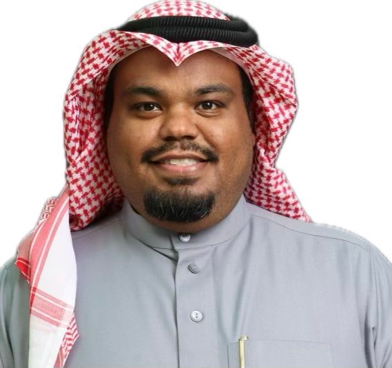

مَن نحن؟
نحن فريق كلية علوم الزراعة والأغذية بجامعة الملك فيصل، صرح أكاديمي رائد تأسس عام ١٣٩٥هـ ليكون شريكًا فاعلًا في تحقيق رؤية المملكة 2030 في مجالات الأمن الغذائي والتنمية الزراعية المستدامة.
رسالتنا
تقديم تعليم وبحوث علمية متميزة لإعداد كوادر قادرة على إدارة الموارد الزراعية وتطوير الصناعات الغذائية باستخدام التقنيات الحديثة، مع الحفاظ على الهوية الوطنية.
رؤيتنا
الريادة العالمية في علوم الزراعة وإنتاج الأغذية من خلال شراكات مجتمعية وبحوث تطبيقية تواكب متطلبات العصر.

برعاية الأستاذ/ سلطان العويد
رئيس الأنشطة الطلابية | قائد فريق فعاليات يوم التأسيس 2024